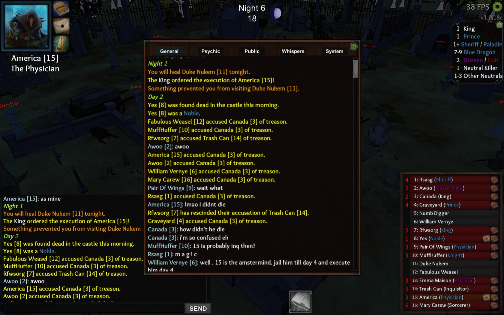

KIng ordered execution n1 but failed to kill me, and I was a physician. Nobody healed me and I didnt get any message of being attacked or healed. I guess this ability has to be more straightforward?
They thought I was MM and kept jailing me which later led to a lot of chaos.

Why would they think you were mastermind! Order execution bypasses night immunity!!!
except when its bugged obviously